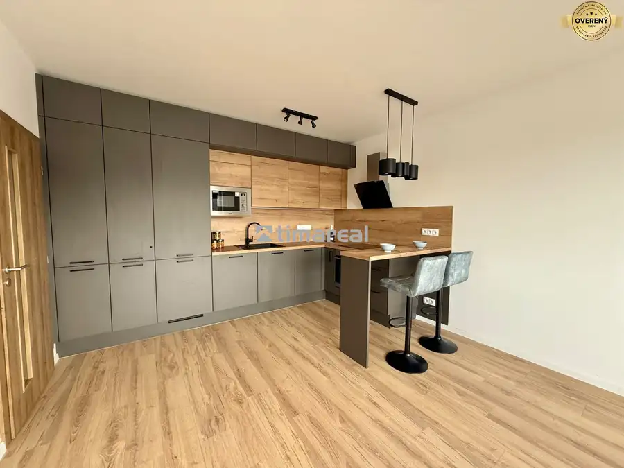
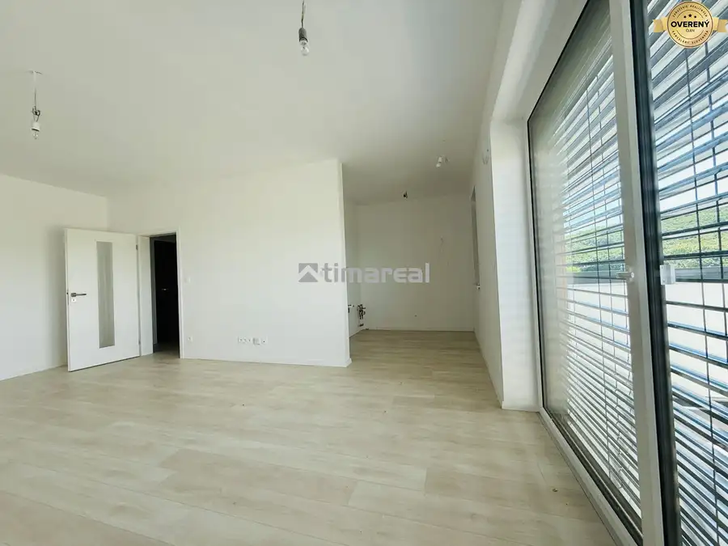
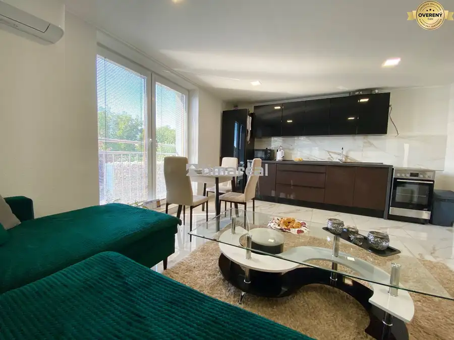
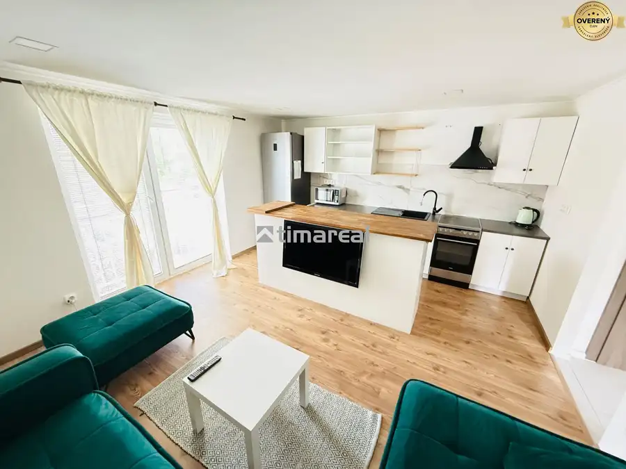
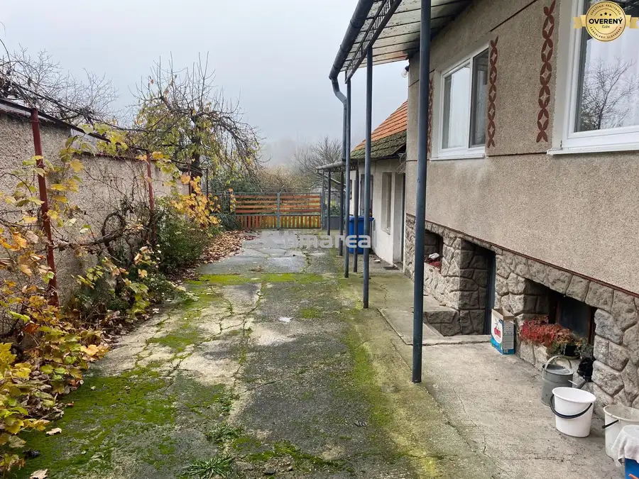

Aktuálna ponuka
11 nehnuteľností, predovšetkým byty, rodinné domy. Každá má vlastnú stránku s fotkami, popisom a mapou.
Prezrieť ponuku
Michaela HincováRealitná maklérka
Realitná maklérka · TIMA Real, s.r.o.
Predaj a prenájom nehnuteľností · Dvorníky, Hlohovec, Suchá nad Parnou

 Byt10
118 000 €Novostavba 2i bytu v štandarde s kuch. linkou, POD RÁBLOM
Dvorníky
2-izbový57.7 m²2. podlažie
Ponúkame na predaj novostavbu nízkoenergetického 2 izbového bytu dokončeného do štandardu vrátane kuchynskej linky v lokalite POD RÁBLOM - Dvorníky.…
Byt5
170 500 €* 3i byt po rekonštrukcii, 73m2, Hlohovec
Hlohovec
3-izbový73 m²10. podlažie
Hľadáte priestranný zrekonštruovaný byt v jednej z vyhľadávaných lokalít Hlohovca? Tento 3 izbový byt s veľkorysou rozlohou 73m2 môže byť tou…
Rodinné domy10
320 000 €Výnimočná novostavba 3i RD v provensálskom štýle, Suchá nad Parnou
Suchá nad Parnou
3-izbový93 m²
Tento dom mi tak trochu prirástol k srdcu. Keď som ho predávala majiteľovi v štádiu hrubej stavby vôbec som netušila, že dom budem mať v ponuke aj…
Byt10
118 000 €Novostavba 2i bytu v štandarde s kuch. linkou, POD RÁBLOM
Dvorníky
2-izbový57.7 m²2. podlažie
Ponúkame na predaj novostavbu nízkoenergetického 2 izbového bytu dokončeného do štandardu vrátane kuchynskej linky v lokalite POD RÁBLOM - Dvorníky.…
Byt5
170 500 €* 3i byt po rekonštrukcii, 73m2, Hlohovec
Hlohovec
3-izbový73 m²10. podlažie
Hľadáte priestranný zrekonštruovaný byt v jednej z vyhľadávaných lokalít Hlohovca? Tento 3 izbový byt s veľkorysou rozlohou 73m2 môže byť tou…
Rodinné domy10
320 000 €Výnimočná novostavba 3i RD v provensálskom štýle, Suchá nad Parnou
Suchá nad Parnou
3-izbový93 m²
Tento dom mi tak trochu prirástol k srdcu. Keď som ho predávala majiteľovi v štádiu hrubej stavby vôbec som netušila, že dom budem mať v ponuke aj…
 Rodinné domy10
206 000 €Novostavba 4i rodinného domu v obci Pavlice
Pavlice
4-izbový103 m²
Ponúkame na predaj novostavbu 4 izbového rodinného domu - dvojdom mimo hlavnej cesty v obci Pavlice. Postavený na pozemku o rozlohe 380m2, zastavaná…
Rodinné domy10
206 000 €Novostavba 4i rodinného domu v obci Pavlice
Pavlice
4-izbový103 m²
Ponúkame na predaj novostavbu 4 izbového rodinného domu - dvojdom mimo hlavnej cesty v obci Pavlice. Postavený na pozemku o rozlohe 380m2, zastavaná…

BytRezervované10 Cena dohodouEXKLUZÍVNE - 1i byt v nadštandarde, Dvorníky Dvorníky 1-izbový41 m²2. podlažie EXKLUZÍVNE IBA U NÁS!!! Ponúkame na predaj krásny nízkoenergetický 1 izbový byt dokončený do nadštandardu v kľudnej lokalite POD RÁBLOM, Dvorníky.…
BytRezervované10 Cena dohodouEXKLUZÍVNE - novostavba 1i bytu, Dvorníky Dvorníky 1-izbový41 m²4. podlažie V zastúpení klienta ponúkame na predaj novostavbu nízkoenergetického 1 izbového bytu dokončeného do štandardu v lokalite POD RÁBLOM - Dvorníky.…
BytRezervované10 Cena dohodouEXKLUZÍVNE - Novostavba kompletne zariadeného 3i bytu Dvorníky 3-izbový54.7 m²1. podlažie V ponuke krásna novostavba 3 izbového bytu v obci Dvorníky. Situovaný na 1p/2p bytového domu. Celková užitková plocha je 54,7m2. Pri dokončení do…
BytRezervované10 Cena dohodouNovostavba 3i bytu s parkovaním, Dvorníky Dvorníky 3-izbový54.7 m²2. podlažie Patríte medzi klientov ktorí túžia po bývaní s benefitmi rodinného domu, s kúskom záhradky a garážovým státim? A aj napriek tomu si hovoríte že veľa…
Rodinné domyRezervované10 Cena dohodouEXKLUZÍVNE - Pekný 4i RD, pozemok 1376m2, Horná Krupá Horná Krupá 4-izbový145 m² Hľadáte rodinný dom na menšiu rekonštrukciu alebo okamžité bývanie s postupnými úpravami do budúcna? Nech sa páči poďte s nami na obhliadku 4…Tomuto výberu zatiaľ nezodpovedá žiadna ponuka. Napíšte mi, čo hľadáte.
Volám sa Michaela Hincová. Som realitná maklérka kancelárie TIMA Real, s.r.o. a pôsobím predovšetkým v lokalitách Dvorníky, Hlohovec, Suchá nad Parnou a Horná Krupá (Trnavský kraj).
11 nehnuteľností, predovšetkým byty, rodinné domy. Každá má vlastnú stránku s fotkami, popisom a mapou.
Prezrieť ponukuDvorníky, Hlohovec, Suchá nad Parnou, Horná Krupá, Trnava a okolie. Ponuku si môžete prezrieť podľa lokality.
Nehnuteľnosti v lokaliteOdhad trhovej ceny, príprava prezentácie, obhliadky, zmluvy a odovzdanie nehnuteľnosti.
Dohodnúť stretnutieNa čo sa pýtate najčastejšie, skôr než sa stretneme.
Odhad trhovej ceny vychádza z aktuálnych ponúk a predajov v lokalite, nie z cenníkových tabuliek. Podmienky Vám poviem pri prvom telefonáte.
Najprv obhliadka a odhad ceny, potom príprava prezentácie (fotografie, popis, inzercia), obhliadky so záujemcami, rezervačná zmluva, kúpna zmluva, návrh na vklad do katastra a odovzdanie nehnuteľnosti. O každom kroku viete vopred.
Najrýchlejšie cez WhatsApp alebo telefón. Termín stretnutia alebo obhliadky dohodneme podľa Vás.